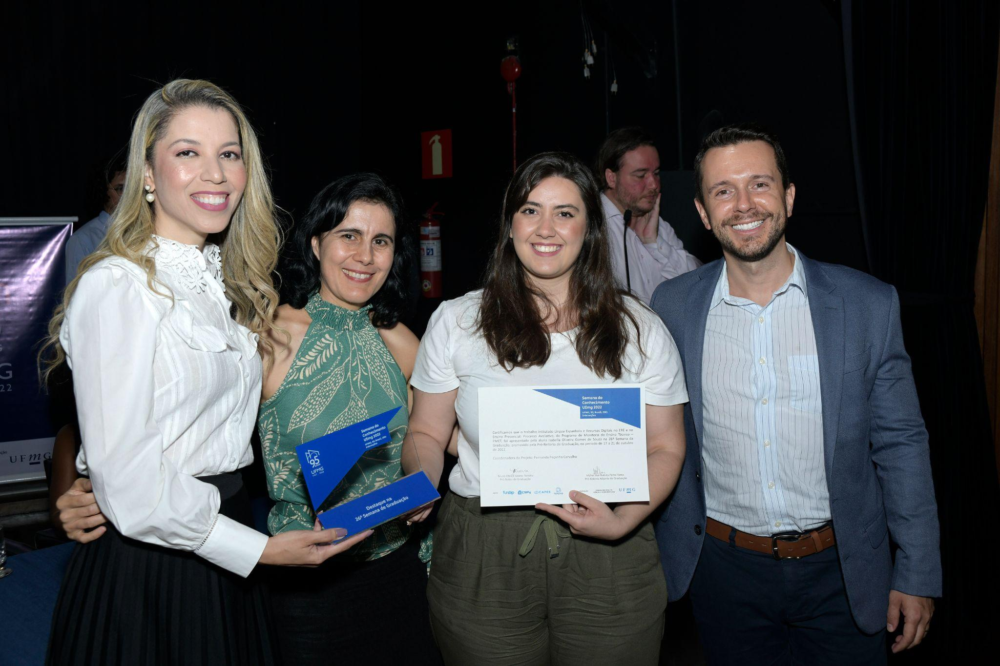
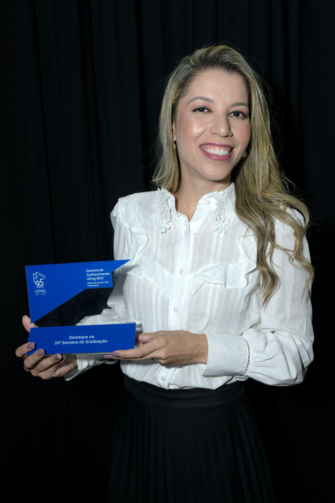
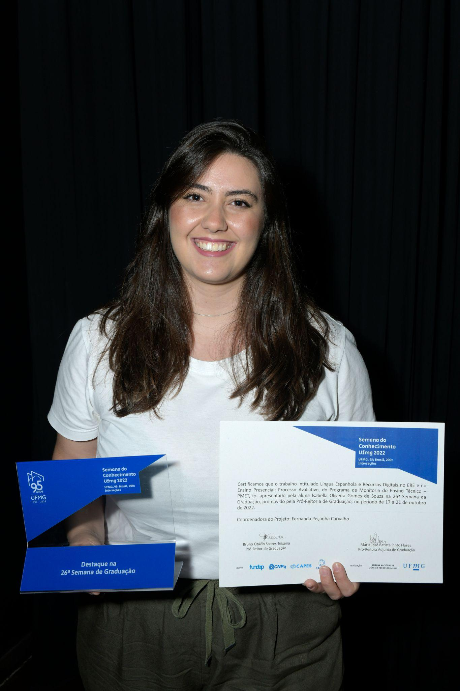

Destaque Graduação
26ª Semana da Graduação
O trabalho “Língua Espanhola e Recursos Digitais no ERE e no Ensino Presencial: Processo Avaliativo” foi apresentado na 26ª Semana da Graduação, promovida pela Pró-Reitoria de Graduação, e recebeu os reconhecimentos de Relevância Acadêmica e Destaque.
Autoria
Fernanda Peçanha Carvalho
Isabella Oliveira Gomes de Souza
Michelle Martins de Freitas


